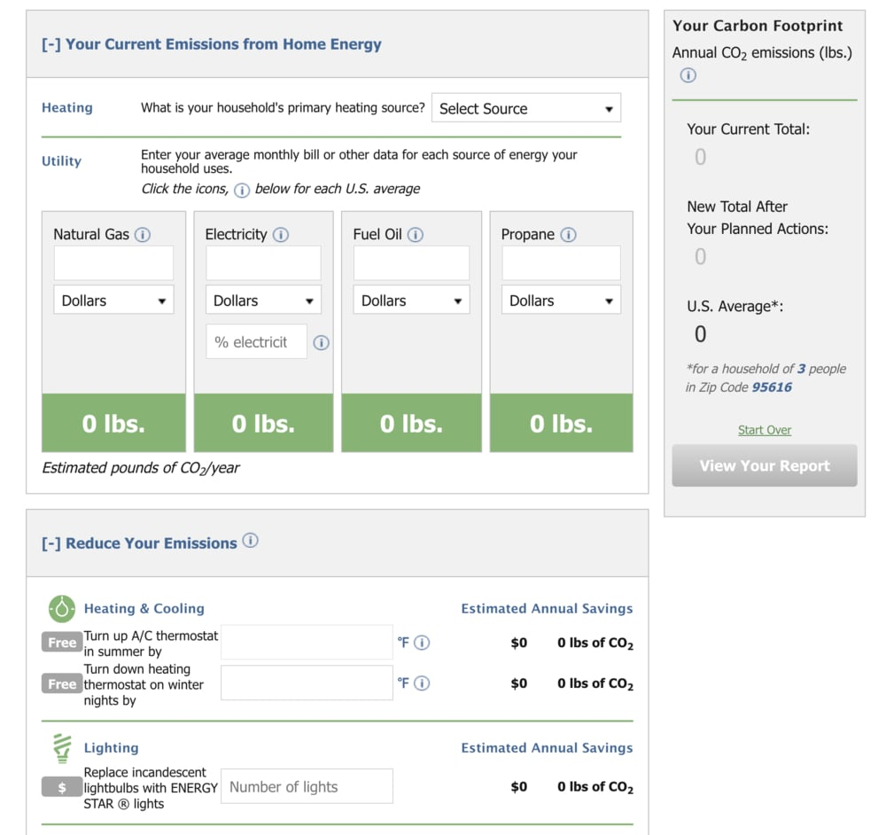
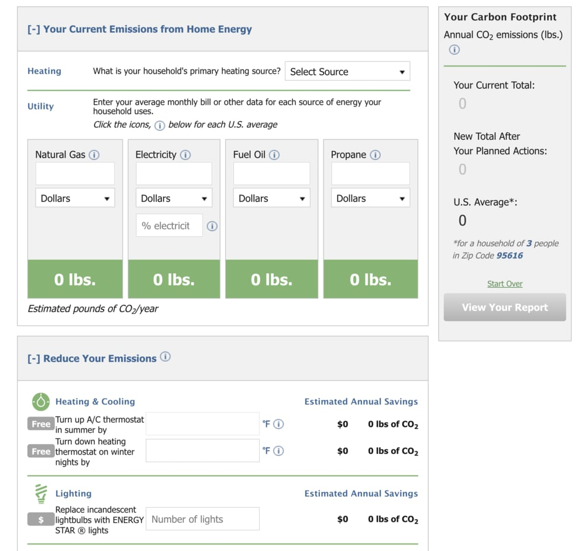

EPA Carbon Footprint Calculator
 
[1]

[1]
This website takes in user input on the user's activities that affect their CO2 production in order to estimate their carbon footprint. In addition to just calculating current usage, it also provides ways to reduce the user's carbon footprint and calculates by how much those actions would reduce their footprint.
Overall, I found that the website was clear and easy to use. One problem I noticed is that some of the data to enter was difficult to estimate, making it hard to get an accurate result. For example, average distance driven per year is not something I passively know. But there was an option to do it by week instead of by year, which made it easier to estimate and more user-friendly. A shortcoming of the results themselves is that they didn't seem as accurate as they could be, since it had fewer, less comprehensive factors to enter in order to calculate the footprint than other carbon footprint calculators. The UI of this website was clearer than some other carbon footprint calculator websites, but it seems that it sacrificed some accuracy of the calculations in order to achieve this. As a whole, however, despite this potential inaccuracy, this website would still have a strong impact, especially in terms of motivating users to take action to reduce their carbon footprint. In terms of effectively sparking action from the user, which seems to be a goal of the website, this simpler UI is possibly more important than the accuracy lost, since users who are frustrated or bored are unlikely to complete the assessment, and thus less likely to take action. In addition, while other websites had lists of possible actions or links to ways to reduce you footprint, none of them provided concrete data on how much it would reduce your footprint by, as this one does. And, by entering the degree to which they would implement these methods, the user receives concrete, measurable effects of those potential actions. This is more motivating, as well as serving like a commitment to actually taking action. Lastly, it is convenient to see the ongoing calculation in the sidebar, which makes it seem like less of a black box.
The interactivity consisted mostly of navigating through the pages of "Home Energy", "Transportation", and "Waste", and entering data through input boxes, drop-down menus, and checkboxes. In addition, there were symbols at the end of every entry that could be clicked on to provide a short description of its relevance and where to find more. I found that this way of imparting information was very effective in its unobtrusiveness, yet clear accessibility through the recognizable symbol. A minor irritating detail to this function, however, is that to close the popup box, the user must click on the 'x' rather than just clicking on the symbol again.